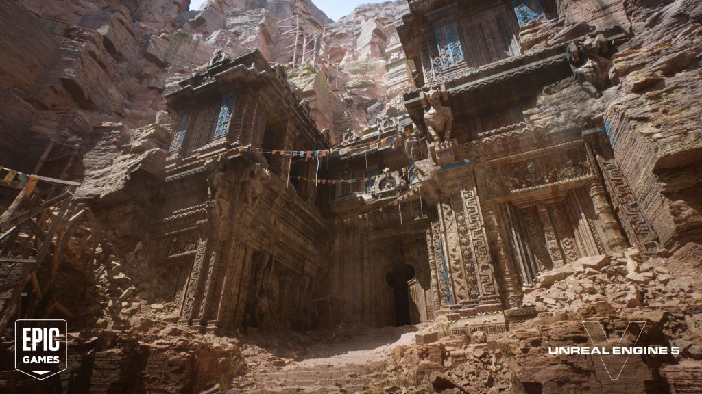

Inicio
Inicio
Ya hemos mencionado los motores graficos mas importantes de la industria del gaming actualmente, no obstante me gustaria destacar al motor Unreal Engine 5 ya que ese motor tiene algunas tecnologias interesantes que pueden revolucionar el apartado visual de los videojuegos.
Cuando se dio a conocer este nuevo editor, la compañía gamer sabía que de nada servía anunciarla solo como un proyecto, por lo que lanzaron diversos tráiler, clips y gameplays de cómo se verán sus juegos con el Unreal Engine 5. Fue así como revelaron el estreno de títulos realizados con este motor, principalmente para la consola más reciente de Sony, teniendo a la demostración The Matrix Awakens como el gran boom de este año.
Tras publicarse el video protagonizado por un Keanu Reeves hecho a computadora y casi idéntico a su versión en persona, otras empresas expresaron públicamente sus deseos por integrar este motor a sus entregas. SUMO Digital, Remedy, Rare y CD Projekt Red son algunas de las que ya han ofrecido un vistazo de sus planes con la tecnología gráfica de punta, entre las cuales The Witcher será apuesta más fuerte en los siguientes meses.
Nanite es un componente del motor que permite importar material de origen fotográfico de gran detalle a los juegos. La tecnología de geometría virtualizada Nanite permite a Epic aprovechar su pasada adquisición de Quixel, la mayor biblioteca de fotogrametría del mundo a partir de 2019. El objetivo de Unreal Engine 5 era facilitar al máximo a los desarrolladores la creación de mundos de juego detallados sin tener que dedicar un tiempo excesivo a la creación de nuevos recursos. Nanite puede importar casi cualquier otra representación tridimensional preexistente de objetos y entornos, incluidos modelos de ZBrush y CAD, lo que permite utilizar elementos de alta calidad cinematográfica.
Lumen es otro componente descrito como una "es una herramienta de iluminación y reflejos globales completamente dinámicos que te permite crear una iluminación indirecta que se adapta sobre la marcha a los cambios producidos en la iluminación directa o la geometría". Lumen elimina la necesidad de que los artistas y desarrolladores elaboren un mapa de iluminación, ni poner capturas de reflejo para una escena determinada, sino que calcula los reflejos de luz y las sombras sobre la marcha, lo que permite que la iluminación se actualice en la escena en tiempo real.
Virtual Shadow Maps o Mapas de Sombras Virtuales es otro componente añadido en Unreal Engine 5 que se describe como "un nuevo método de mapeado de sombras utilizado para ofrecer sombras consistentes y de alta resolución que funcionan con elementos de calidad cinematográfica y grandes mundos abiertos iluminados dinámicamente". Los mapas de sombras virtuales se diferencian de los mapas de sombras habituales por su altísima resolución y detalle. Además corrige un error frecuente que se producía con la técnica de Shadow Cascades, que provocaba la aparición y desaparición de sombras.
https://es.wikipedia.org/wiki/Unreal_Engine#Unreal_Engine_5
Copyright © José Luis Garza Gloria. Estudiante Programador de Desarrollo Web en Facpya
José Luis Garza Gloria
Teléfono: 555-1234
Email: jose.garzaglr@example.com